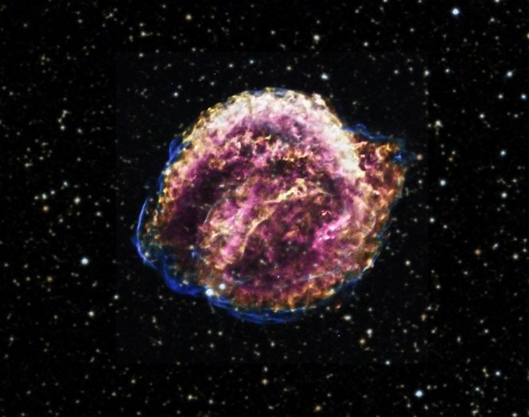

Intro to Black holes
Black holes are a crazy but interesting phenomena that appear in our universe. Due to the common ignorance of them, they are constantly used as a shortcut for any plot hole in stories involving space. They are also the center of numberous theories. Hopefully this short introduction can help clear up some misconceptions about them.
What is a black hole?
A black hole is simpily a singularity, meaning a singular point in space. This point is extremely dense and small, probably infinitely. That density in a small place causes it to have an immense amount of gravity. So a black hole is not a portal to another dimension, it's nothing more than a lot of mass in a small place. Now one might wonder how a black hole is created.

How black holes are created
Most people don't think twice about how these crazy, completely black, terrors appeared in our universe, thinking it's probably too confusing. It's actually quite simple, when you ignore most of the physics behind it. A black hole is created when a star that is big enough reaches the end of it's life and explodes, which is called a supernova. The gravity of the star is so strong that it pulls the contents back into it self. Now if the star is slightly too small it condenses down into a neutron star. Otherwise the force of it collapsing is strong enough to make neutrons get closer than physically possible, once it passes that it just keeps going. Getting infinitely smaller, until you get a sigularity.
What would happen if you entered a black hole?
First thing that would happen is that you would be evaporated by the amount of radiation around the edge of the event horizon of the black hole. The event horizon is the point in a black hole that once it is passed there the is no going back, not even light has enough speed to escape out of the gravity well. If you were to make it past the radiation and go deep then you would be spaghettified, this is the actual scientific term. This means that all of your atoms in your body are ripped apart and strung out into a line like spaghetti. Finally, you decend until your atoms become part of the singularity.
Some more information about black holes
| Type | Size(solar masses) | Radius |
|---|---|---|
| Supermassive Black hole | 10^5 - 10^10 M | 0.001 - 400 AU |
| Intermediate-mass Black Hole | 10^3 M | 10^3 km |
| Stellar Black Hole | 10 M | 30 km |
| Micro Black Hole | Mass of the moon | 0.1 mm |